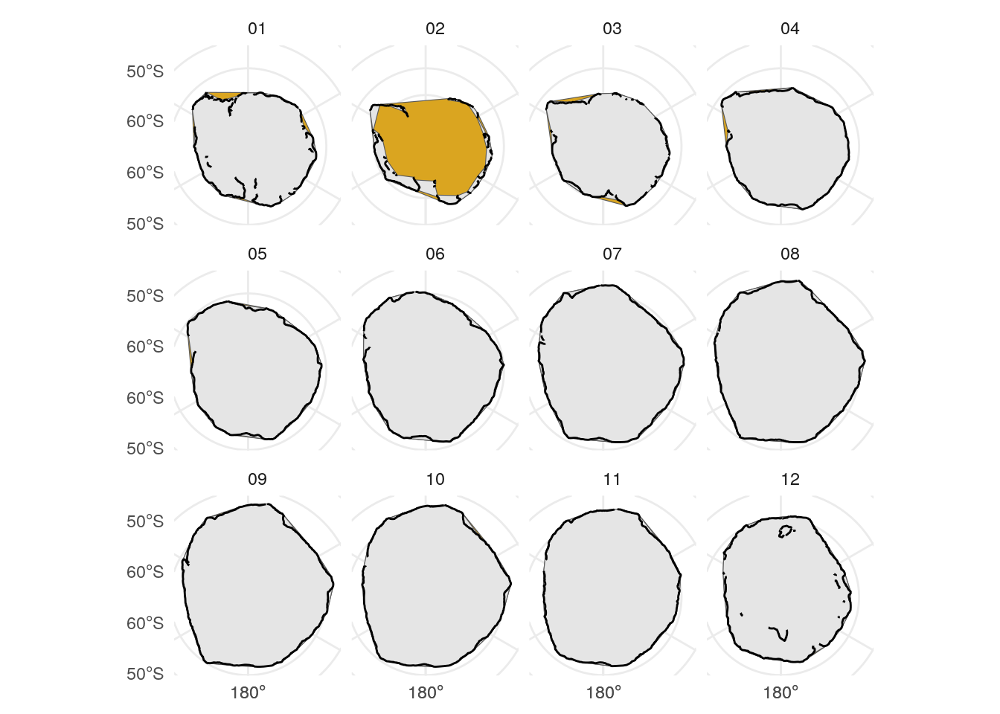

If they aren’t already present, we’ll download the Bedmap2 topography/bathymetry grids, as well as the NSIC’s median 1981-2010 sea ice borders for each month of the year:
Skipping download of median_extent_S_01_1981-2010_polyline_v3.0.zip
Skipping download of median_extent_S_02_1981-2010_polyline_v3.0.zip
Skipping download of median_extent_S_03_1981-2010_polyline_v3.0.zip
Skipping download of median_extent_S_04_1981-2010_polyline_v3.0.zip
Skipping download of median_extent_S_05_1981-2010_polyline_v3.0.zip
Skipping download of median_extent_S_06_1981-2010_polyline_v3.0.zip
Skipping download of median_extent_S_07_1981-2010_polyline_v3.0.zip
Skipping download of median_extent_S_08_1981-2010_polyline_v3.0.zip
Skipping download of median_extent_S_09_1981-2010_polyline_v3.0.zip
Skipping download of median_extent_S_10_1981-2010_polyline_v3.0.zip
Skipping download of median_extent_S_11_1981-2010_polyline_v3.0.zip
Skipping download of median_extent_S_12_1981-2010_polyline_v3.0.zip
These are pretty tiny, so there’s no need to simplify them. Instead, let’s reproject them to EPSG:4326 and write them all out as a single GeoJSON:
Code
# open all the months' boundaries in a single tibblensidc_downloads |>mutate(month = padded_months,dest_file =file.path(dest_dir, basename(url)) |>str_replace(".zip", ".shp"),shape =map(dest_file, read_sf)) |>select(month, shape) ->seaice_shapes# convert to sfseaice_shapes |>unnest(shape) |>st_as_sf() ->seaice_sf
These boundaries are line strings rather than polygons. We could make convex hulls of the boundaries, but we might miss areas where the sea ice boundaries curves back in toward the pole.
# first the convexggplot() +geom_sf(data = seaice_hulls_convex, fill ="goldenrod") +geom_sf(data = seaice_hulls_concave) +geom_sf(data = seaice_sf) +facet_wrap(vars(month)) +theme_minimal()

This plot, showing the convex hulls (in yellow) and the concave ones at ratio = 0.25 (in grey) agains tthe original boundaries, shows the concave hull is small but good improvement for most months.
It isn’t working for Feb, though, so let’s process that month separately with a higher ratio before returning it to the others.
The NSIDC’s GLIMS dataset tracks glaciers. This time I’ve pre-downloaded the source point data and version controlled it; we’ll crop it and re-export it as a CSV here.